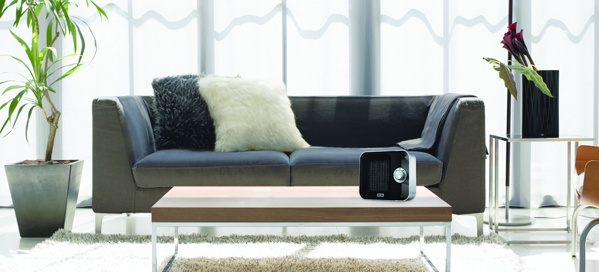
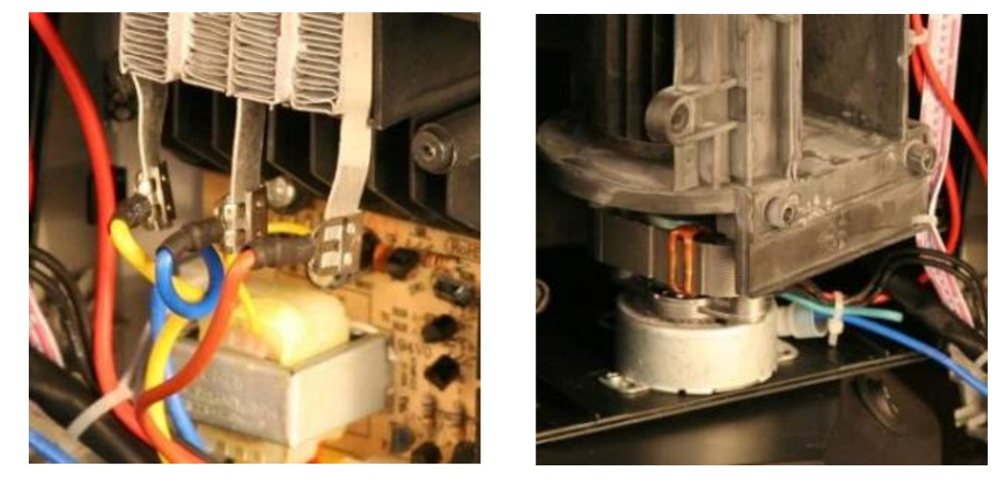
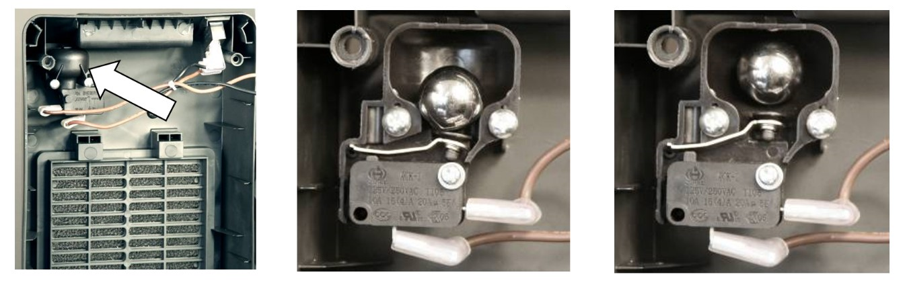
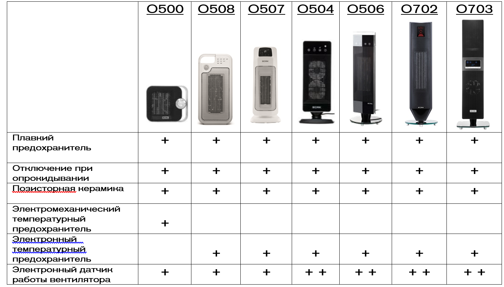
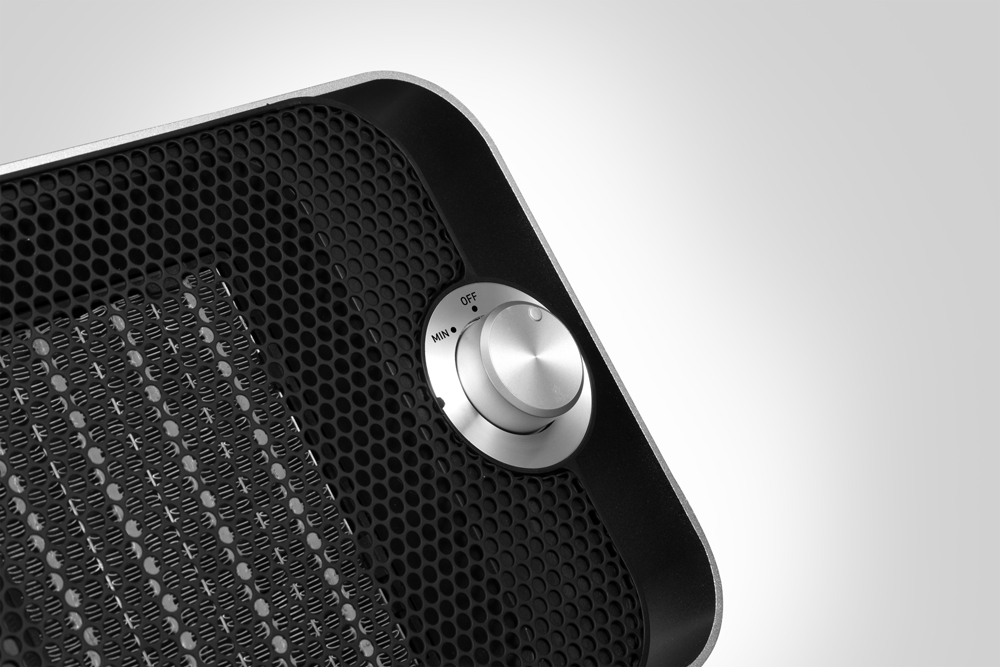
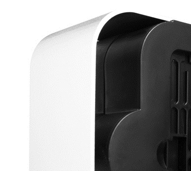
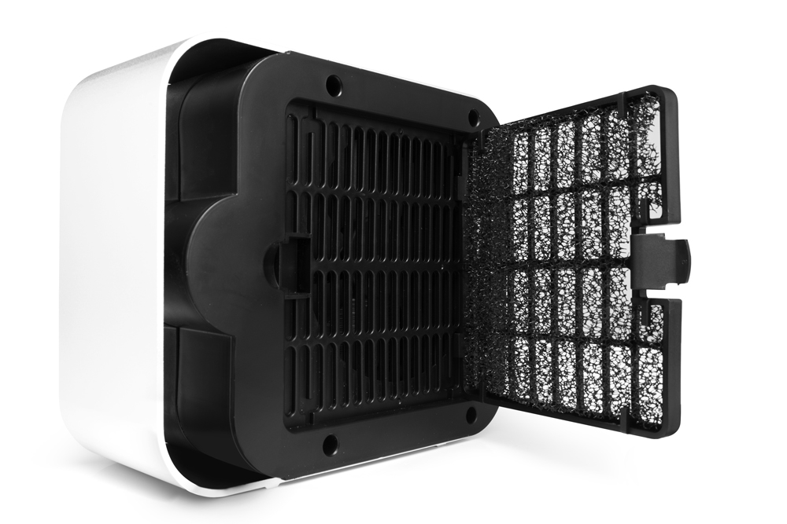
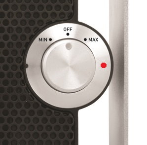
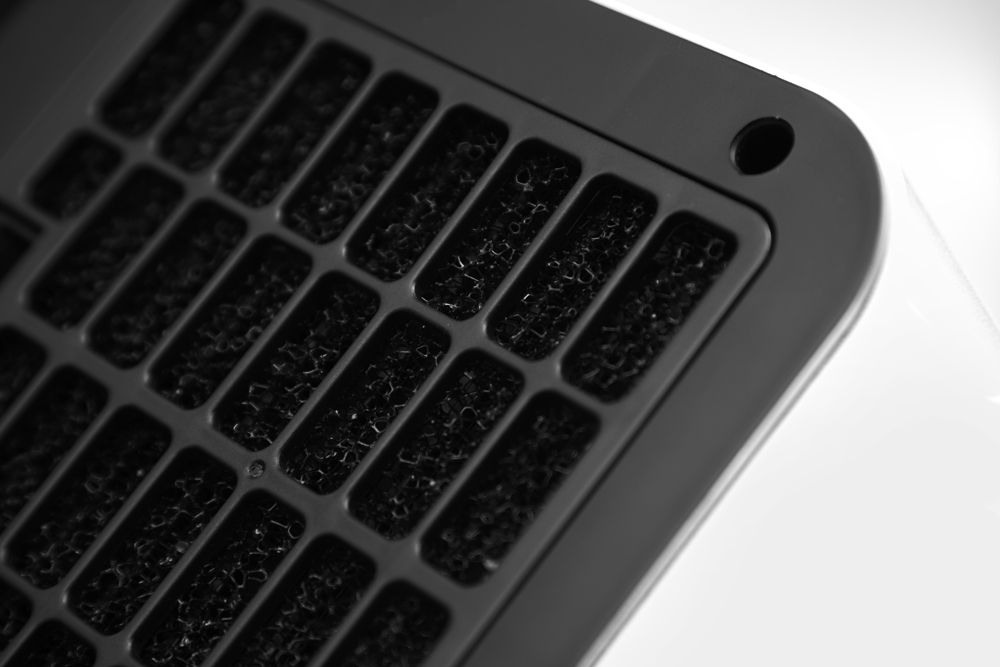

Керамический обогреватель BORK O500
Позисторные керамические обогреватели
Керамические обогреватели относятся к типу тепловентиляторов, так как они тоже работают по принципу принудительной конвекции. Но в техническом плане это совершенно разные аппараты. Техническое развитие не стоит на месте, требования к климатической технике с годами ужесточаются, поэтому, в данных аппаратах представлены все достоинства обычных тепловентиляторов с их высоким КПД и высокой теплопроизводительностью.
В традиционных керамических (композитных) обогревателях в качестве нагревательного элемента используются керамические пластины с алюминиевыми ребрами. Для увеличения поверхности соприкосновения воздуха с нагревателем, алюминиевые ребра выполнены в виде мелких ячеек. Для поддержания заданной температуры в этих обогревателях применяют термостат.
На протяжении многих лет производители не вносили инновационных решений в модификацию приборов, а только изменяли дизайн. Последней разработкой в области теплотехники стало внедрение позисторной керамики (на основе титаната бария). Воздушный поток создается путем продувания воздуха через радиаторы, изготовленные с применением самостабилизирующихся керамических нагревательных элементов.
Принцип работы
При прохождении электрического тока позистор быстро нагревается благодаря его изначально низкому сопротивлению. Потом при достижении температуры примерно 190-200 °С, в результате резкого роста сопротивления нагрев прекращается и наступает режим саморегулирования. То есть, он автоматически поддерживает заданную температуру. Если температура окружающей среды уменьшится, то термодинамическое равновесие нарушится и позисторный нагреватель увеличит потребляемый ток, что в свою очередь увеличит мощность нагрева.
Позистор – это терморезистор с Положительным Температурным Коэффициентом. (При увеличении температуры, повышается сопротивление)
Материалом терморезисторов, с ПТК, является поликристаллический полупроводниковый титанат бария (BaTiO3). Добавляя другие материалы, например, титанат свинца или стронций, можно изменять температурный диапазон (от -100 до +250°С).
- Потребляемая мощность саморегулируется, в зависимости от температуры забираемого воздуха
- Максимальная температура поверхности нагревателя не превышает 200°С
- При приближении температуры к максимальной увеличивается сопротивление, процесс нагрева прекращается
- Повышается скорость нагрева, за счет большего выделения тепла на единицу площади
Особенности керамических позисторных
Обогревателей BORK

Площадь поверхности нагревательного элемента в 2,5 раза больше поверхности традиционной (композитной) керамики при одинаковой мощности потребления.

Сборка на высококачественном немецком оборудовании SCHLOTTER.
- качество сборки
- специальный термостойкий пластик, исключающий деформацию и выделение пахучих соединений
- контактная группа (клеммы подсоединений)
- качество соединительных проводов
- панель сенсорного управления.

Обогреватели BORK
Традиционная керамика

Система осевых вентиляторов

Тангенциальный вентилятор
Система лопастных вентиляторов, создает плотный равномерный воздушный поток, охватывающий всю площадь нагревательного элемента.
Защитная система, отключающая прибор при падении или наклоне.
Специальный механизм, отключающий прибор не чувствителен к неровностям пола, заключен внутрь корпуса прибора, поэтому не может быть механически поврежден в процессе эксплуатации.
Количество степеней защиты обогревателей BORK
Технические характеристики BORK O500
Мощность: 800/1200 Вт
Площадь обогрева: 10-15 м2
Количество режимов: 2
Габариты (ВхШхГ): 20x17x9.4 см
Вес: 1,4 кг
Аргументы для продажи
Отключение при падении / перегреве
Алюминиевый корпус
Съемный воздушный фильтр
Световой индикатор работы
Низкий уровень шума в своем классе